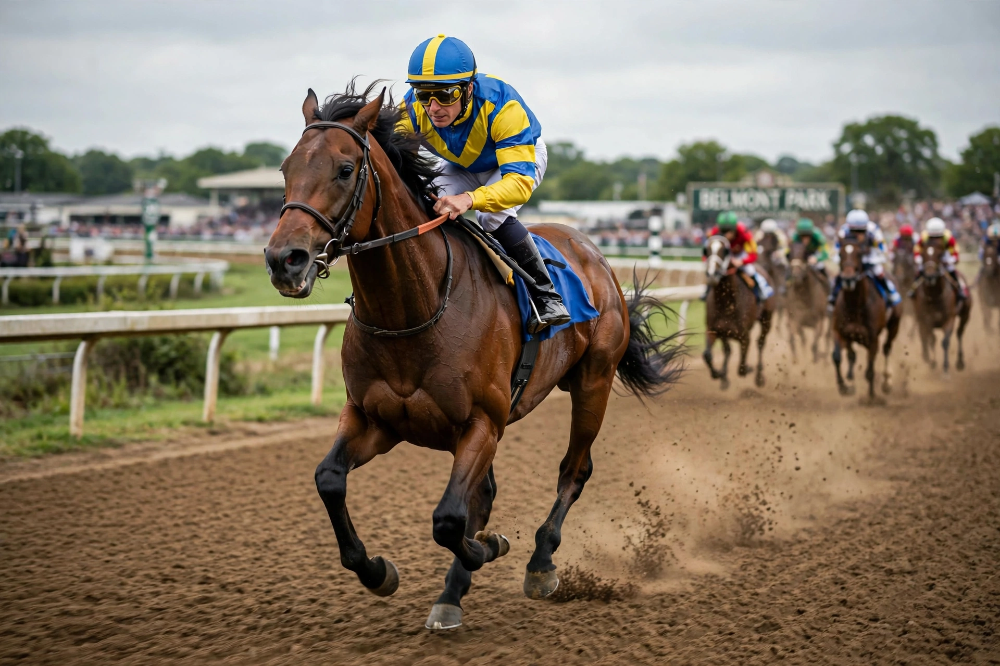

American Pharoah
| American Pharoah | |
|---|---|
 | |
| American Pharoah winning the 2015 Belmont Stakes | |
| Sire | Pioneerof the Nile |
| Foaled | February 2, 2012, Kentucky, United States |
| Owner | Ahmed Zayat (Zayat Stables) |
| Trainer | Bob Baffert |
| Record | 11 starts: 9 wins |
| Earnings | $8,676,300 |
American Pharoah (foaled February 2, 2012) is a retired American Thoroughbred racehorse who won the American Triple Crown in 2015, becoming the 12th horse to do so and the first since Affirmed in 1978, ending a 37-year drought. He was later also the first horse to win the "Grand Slam" of American racing by adding the Breeders' Cup Classic in his final start.
Racing career
Trained by Bob Baffert and ridden in his Triple Crown campaign by Victor Espinoza, American Pharoah won the 2015 Kentucky Derby by a length, dominated a sloppy-track Preakness Stakes by seven lengths, and then won the Belmont Stakes wire-to-wire by 5½ lengths, with one of the fastest closing quarters in the race's history. After a shock defeat in the Travers Stakes — the "Graveyard of Champions" — he rebounded to win the Breeders' Cup Classic at Keeneland, defeating older horses. He was voted 2015 American Horse of the Year.
Stud career and name
Retired to Ashford Stud in Kentucky, American Pharoah has sired Group and Grade 1 winners in several countries, and later shuttled to stand seasons in Japan. His name deliberately misspells "Pharaoh" — a spelling submitted in a naming contest that owner Ahmed Zayat, an Egyptian-American, said honoured his heritage; the misspelling was reportedly noticed only after registration.